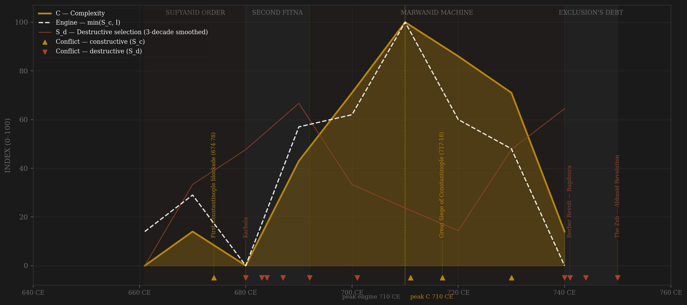
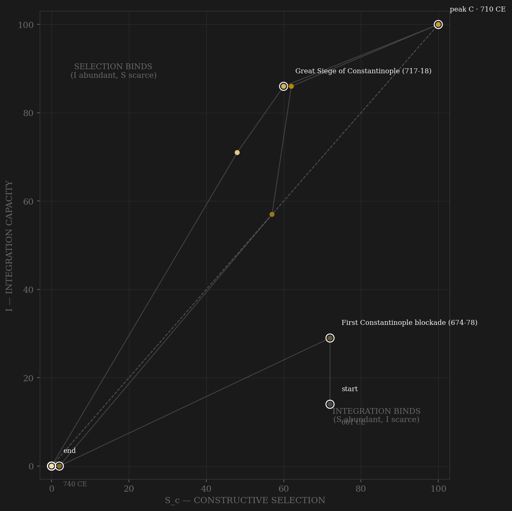

Ninety years compress the whole cycle into one lifetime's arc. The Sufyanid opening is real contestability inside the Arab frame: Mu'awiya rules by hilm and negotiation, Ziyad — son of his own father, no lineage at all — is adopted and handed Iraq, and the wufud delegations keep the shura ideal visibly alive. But the ceiling is set at the founding: the diwan pays by conquest-precedence, and the mawali — the non-Arab converts who will soon be the empire's majority — enter only as clients. Karbala (680) opens the founding legitimacy wound and the Second Fitna tears the state to its frame: Medina sacked by the dynasty's own army, the Kaaba burned, Qays and Kalb bleeding each other at Marj Rahit, Mukhtar's Kufa rising fighting explicitly FOR the mawali — the exclusion's first armed bill, presented within twenty years of the founding. The Marwanid restoration then builds the strongest administrative machine the early medieval world had seen: the epigraphic dinar of 696-99 — the first unified Islamic currency, replacing Byzantine and Sasanian types across two former empires — Arabic as the single administrative language, the barid relay grid, dated milestones, the Aphrodito papyri showing provincial government in documentary depth. Engine and complexity crest together in the 710s: Iberia, Sind, and Samarkand taken in a single decade, the great siege of Constantinople thrown and lost at the frontier, the Great Mosque of Damascus finished — and Umar II's rescript (717-20) granting the mawali fiscal equality on conversion: the ONE attempt to lift the defining ceiling, reversed within three years of his death. The red line then does something no long polity shows this cleanly: it climbs almost monotonically to the kill. Harith ibn Surayj's Khurasani army revolts on the mawali-grievance program itself; the Berber convert troops of the Maghrib destroy a Syrian army at Bagdoura; Zayd's rising echoes Karbala in Kufa; the Third Fitna murders a caliph by his own house; and the Abbasid da'wa raises Khurasan's mawali and disaffected Yamanis — the two constituencies the ceiling had made — and collects at the Zab in January 750. The dynasty is massacred at a dinner table at Abu Futrus. Hard S_d did not select the Umayyads out; a closed channel A manufactured the S_d that did.

The trajectory enters mid-plot on both axes — the founder inherits a functioning conquest state, not a ruin — and the Second Fitna immediately drags it to the S_d floor with integration halved: rival caliphates split the diwans themselves. The Marwanid recovery is the sample's steepest short climb up the integration axis: coinage, chancery language, barid, all unified inside two decades, with contestability recovering only partway — the ceiling holds channel A down even as careers professionalize. Peak (710s) sits in the upper-right corner with S and I briefly at joint maximum: the one decade the ceiling lifted is the one decade the polity looks like a PASS candidate in the making. Then the path falls down-left along both axes at once — the reopening reversed, the fiscal machine strained by its own contradiction (conversion erodes the jizya base while the stipend roll grows), two field armies mauled on two frontiers — and dies in the lower-left with S_d at maximum. There is no annuity phase, no pensioner coda: at 90 years, rise, noon, and collection happen inside a single human memory.
Coded by locus and target, never by outcome. The Umayyad ledger's signature is how much of it is S_d aimed at the dynasty's own legitimacy machinery: Karbala and the Harra are the state's army against the Prophet's family and city — wounds to the coordination apparatus of an Islamic polity as surely as any burned chancery. Both Constantinople attempts stay B: thrown and lost at the frontier with the machinery intact through the failure (the Hannibal rule), as does Ardabil, where a governor died with his field army (Teutoburg precedent). Marj Rahit is the hinge case: Qays versus Yaman AT WAR is S_d — intra-elite bloodletting that never healed — while the same rivalry MANAGED by Abd al-Malik's deliberate alternation of appointments scores channel C. And the mawali risings — Mukhtar 685, Harith ibn Surayj 734, the Berber revolt 739 — are the exclusion system generating its own destructive selection: the H-RENT-001 shape, visible in a nine-row polity with the naked eye.
| YEAR | CONFLICT | CODE | CODING RATIONALE |
|---|---|---|---|
| 674 CE | First Constantinople blockade (674-78) | Sc | The throw at the world-city fails against Greek fire at the frontier — machinery intact through the failure (Hannibal rule); some scholarship reads the sources as serial raids (Hoyland) — peak pressure either way |
| 680 CE | Karbala | Sd | The Prophet's grandson killed by the state's own troops — the founding legitimacy wound of the dynasty; locus is the polity's own legitimacy machinery |
| 683 CE | The Harra & first siege of Mecca | Sd | Medina sacked by the dynasty's army, the Kaaba burned — the state attacking its own holy cities; core locus |
| 684 CE | Marj Rahit | Sd | Qays vs Kalb — intra-elite tribal bloodletting that never heals (Crone); the same rivalry MANAGED scores C, at war it is S_d |
| 687 CE | Mukhtar's rising crushed | Sd | Kufa rising fighting FOR the mawali (685-87) — the exclusion's first armed bill, put down by Mus'ab; internal locus |
| 692 CE | Fall of Mecca — Second Fitna ends | Sd | Ibn al-Zubayr's counter-caliphate extinguished by siege — rival claimant, not rival polity (Ariq Boke precedent) |
| 701 CE | Ibn al-Ash'ath — Dayr al-Jamajim | Sd | The Iraqi army itself in arms against al-Hajjaj (700-703) — the metropolitan military rejecting the center; Iraq garrisoned by Syrians thereafter |
| 711 CE | Guadalete & Sind — the conquest apex opens | Sc | Iberia 711-16, Sind 711-13, Samarkand 712 — external peer conquest at maximum extent; frontier locus throughout |
| 717 CE | Great Siege of Constantinople (717-18) | Sc | The second and last throw at Byzantium — lost at the frontier with fleet losses; machinery intact (Hannibal rule); B at peak amplitude |
| 730 CE | Ardabil — al-Jarrah killed by the Khazars | Sc | A governor dead with his field army on the Caucasus frontier — Teutoburg precedent, stays B; Marwan's Volga counter-campaign follows 737 |
| 740 CE | Zayd ibn Ali's rising | Sd | Karbala's echo in Kufa — the Alid wound reopened against the dynasty's legitimacy machinery; crushed |
| 741 CE | Berber Revolt — Bagdoura | Sd | Convert (mawali) troops under Kharijite banners destroy a Syrian army (739-43); al-Andalus effectively separates — the western half of the exclusion's debt |
| 744 CE | Third Fitna opens — Walid II murdered | Sd | A caliph killed by his own house; three caliphs in a year; al-Dahhak's Kharijite state holds Kufa 745-46 — the apex settled by arms (744-47) |
| 750 CE | The Zab — Abbasid Revolution | Sd | Abu Muslim's Khurasani coalition of mawali and Yamanis — the constituencies the ceiling made — breaks the last Umayyad army; the house massacred at Abu Futrus: terminal, the exclusion collecting its debt |
| COMPONENT | GRADE | BASIS |
|---|---|---|
| S_c — channel A, elite-entry (0.40) | ○ scholar-coded | The defining ceiling: Arab tribal monopoly, mawali excluded from equal status — unequal diwan stipends, jizya often levied on converts, entry by clientage only (Hawting chs. 1, 4; Kennedy chs. 4-5; Wellhausen on the mawali). Within-frame contest coded: Ziyad's adoption, kuttab careers under the Marwanids (Abd al-Hamid al-Katib), tribal-federation command ladders (Crone). UMAR II 717-20 = the one reopening (fiscal-equality rescript), reversed under Yazid II — the ledger showcase |
| S_c — channel B, peer rivalry (0.30 HARD CAP) | ○ scholar-coded | Byzantine war incl. both Constantinople attempts 674-78/717-18 (frontier locus, Hannibal rule); Khazar wars (Ardabil 730 = Teutoburg precedent); Turgesh contests (Day of Thirst 724, the Defile 731); conquest wave — Iberia 711-16, Sind 711-13, Transoxiana 705-15; Akroinon 740. Well-dated skeleton despite Abbasid-era narrative sources |
| S_c — channel C, within-rules contest (0.30) | ○ scholar-coded | Shura-ideal vs dynastic practice (Mu'awiya's hilm/wufud = the C peak; Yazid's nomination 676 starts the decay); Qays-Yaman balancing WHILE MANAGED (Abd al-Malik's alternation) — the same rivalry at war is S_d; kharaj/jizya policy contests fought by rescript (Umar II; Nasr ibn Sayyar's Khurasan reform 739-40) |
| S_d — Destructive | ○ coded on a dated event skeleton | Karbala 680; Second Fitna 680-92 (Harra, both sieges of Mecca, Marj Rahit, Mukhtar); Kharijite risings; Ibn al-Ash'ath 700-703; Yazid b. al-Muhallab 720-21; Harith ibn Surayj 734-46 (army revolt ON the mawali-grievance program); Zayd 740; Berber Revolt 739-43; Third Fitna 744-47; Abbasid Revolution 747-50. Narrative sources are Abbasid-era and hostile — dates stable, characterizations discounted |
| Sc_v1_combat (frozen synthetic) | ○ scholar-coded | Channel B alone (external-war-only, the prior definition's operative content) — no v1 page ever existed; synthesized per the straight-to-v2 rule (Mughal/Gupta/Athens precedent) |
| I — Integration | ○ coded + ◐ dated objects | COINAGE REFORM 696-99 — the epigraphic dinar/dirham, first unified Islamic currency, dated issues survive in quantity (Robinson ch.5) = the I showcase; arabization of the diwans (Iraq ~697, Egypt 705-15); barid postal relay (Silverstein pt. I); Abd al-Malik's dated milestones; Aphrodito papyri 709-14 (documentary provincial depth); hajj infrastructure |
| C — Complexity | ○ coded + ◐ dated monuments | Dome of the Rock 691/2 (dated mosaic inscription, 72 AH); Great Mosque of Damascus 706-15; Damascus/Basra/Kufa/Fustat metropolitan scale, Wasit founded 702; desert qusur (Qusayr Amra dated frescoes); chancery prose (Abd al-Hamid al-Katib); coin volume after 699 |
| E — Entropy | ○ scholar-coded | Fitna frequency; plague waves (Dols JAOS 94: al-Jarif Basra 688-89 — chronicle toll ~200k = ○ tradition — 706, 725-26, 734-36, 744-49 under the terminal sequence); the exclusion system's fiscal contradiction — conversion erodes the jizya base while the stipend roll grows (Blankinship chs. 3-8) |
| R — Renewal (population) | ○ order-of-magnitude | Whole-caliphate ~28-33M in MILLIONS (McEvedy & Jones basis); no census survives; level-flat context, not signal |
9 decade rows (661 off-decade founding row covering 661-669, then 670…740; the 740 row covers 740-750, Yuan-1360 precedent) built by scripts/build_umayyad_sicre.py — a straight-to-v2 contestability build (AMENDMENT_S_definition_v2.md): Sc_constructive = 0.40 elite-entry (the mawali-exclusion ceiling + within-frame Arab contest) + 0.30 peer rivalry (hard cap, locus-cleaned) + 0.30 within-rules contest; Sc_v1_combat = channel B alone, synthesized per the straight-to-v2 rule. Channel ledger: data/raw/umayyad/coding_ledger_v2.csv; audit: components_audit.csv; source-criticism regime (Abbasid-era narrative hostility; ◐ = coins/milestones/papyri/monuments only): data/raw/umayyad/SOURCES.md. FROZEN-PROTOCOL LAG UNDER BOTH DEFINITIONS (3-decade centered rolling mean, engine=min(Sc,I)): v2 engine 710 → C 710 = +0 SIMULTANEOUS; v1 engine 720 → C 710 = -10 SIMULTANEOUS. UNSMOOTHED SENSITIVITY (Athens short-series precedent): v2 +0 SIM, v1 +0 SIM — every treatment lands SIMULTANEOUS. Smoothed C exactly ties 710/720 (Gupta tie precedent; idxmax takes the first): the later tie-break gives v2 +10 / v1 +0, still SIMULTANEOUS everywhere. RESOLUTION CAVEAT — THE SHORTEST SERIES IN THE SAMPLE: 9 rows beats Yuan's 11; one 3-decade smoothing window spans ~33% of the polity's life, and a 90-year polity CANNOT internally resolve a 50-150-year lag window at all — the lag row exists for the master table but should carry near-zero weight in pooled lag tests (Yuan precedent, stronger). ○ HALO CAVEAT: scholar-coded polities cluster at SIMULTANEOUS (gupta 0, achaemenid 0, sasanian 0, abbasid -10) — the same historians' narrative feeds both the contestability and complexity codings; Umayyad +0 fits the cluster and is flagged accordingly. What the page IS evidence for is the mechanism, not the lag: channel A closed by statute-like exclusion, one documented reopening attempt (Umar II 717-20) reversed, and terminal S_d recruited precisely from the excluded class (Khurasani mawali + Berber converts) — the H-RENT-001 shape at maximum compression. Rebuild: ~/grove/venv/bin/python ~/vitalic.stoicism/scripts/build_umayyad_sicre.py, then polity_report.py --slug umayyad